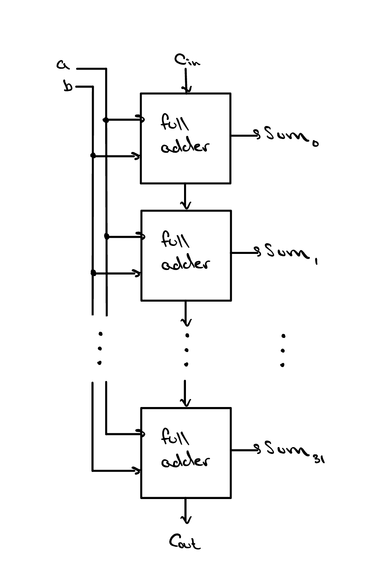

The Full Adder and Ripple Carry Adder
A single gate makes one decision, but arithmetic needs gates working together. The full adder is the smallest circuit that can really add, and if we string multiple of them together, we can add numbers of any size.

Binary Addition

Adding two bits in binary works exactly like adding two digits in the base-10 number system — also called the decimal number system — that you already know. Start with the smallest cases: 0 + 0 = 0, 0 + 1 = 1, and 1 + 0 = 1.
The interesting one is 1 + 1, which equals 2. The only problem is that we need two bits to represent 2 in binary — so 1 + 1 = 10! If you look closely at our answer, the bit we started with actually turned into a 0, and we “carried” a 1 to the left by one position.
Just like in decimal, binary addition requires carrying bits. In fact, each time we add two input bits we actually get two output bits: the sum of our two input bits, and a carry into the next most significant bit.
The table at right illustrates the different results we could get
from adding two bits. As expected, Cout is
only 1 when both a and b are
1, because this is the only combination where adding
the two bits would result in an answer that we cannot fit in just
one bit.

Cout) into the next column.
The Full Adder
Believe it or not, we are now one step away from the makings of a
full adder. If you think back to how addition is performed by hand,
each time we exceed the decimal value of 1 we must carry a 1 to the
next bit. We called this the Cout of our bit
— but from the perspective of the bit it carries into, what
should we call it?
With each bit having a Cout, it only makes
sense that each bit should also have a Cin,
because the Cout of one bit is by definition
the Cin of the next bit. Each of a, b, and
Cin are inputs to our full adder, and are
summed together to produce both the Sum and the
Cout that we then pass on to the next bit.
Adding Multi-bit Numbers
Naturally, the next step is adding numbers with multiple bits. The good news is that this isn't hard at all, so long as we remember to include the carry-out from the previous bit when we add the next one. As discussed before, we call the carry out of a bit its Cout, and the carry into a bit its Cin. With some careful thinking, you might reason that to add multiple bits, the carry-out of the previous bit has to become the carry-in of the next bit. And you'd be right!
To add multiple bits, we must chain multiple full adders
together, connecting each bit's Cout to the
next bit's Cin. This chain is often referred
to as a ripple carry adder, and it is the backbone
of our ALU design. Since the Cin of each
full adder is now an input in its own right, we can update our table
to include all three of a, b, and
Cin as inputs.

Cout
connected to the next bit's Cin.

Cin as
a third input. The comments column shows each row as the sum
a + b + Cin.

From this table we can create logic expressions for both outputs,
Cout and Sum. Notice that
Sum is only ever 1 when an odd
number of the input bits are 1. Thinking back to the
last lesson, this is precisely the XOR
functionality, so we can draw the circuit for Sum as
shown at left. The logic expression for
Cout is left as an exercise at the end of
this lesson!
Check Yourself
A full adder is given a = 1, b = 1, and Cin = 0. What are Sum and Cout?